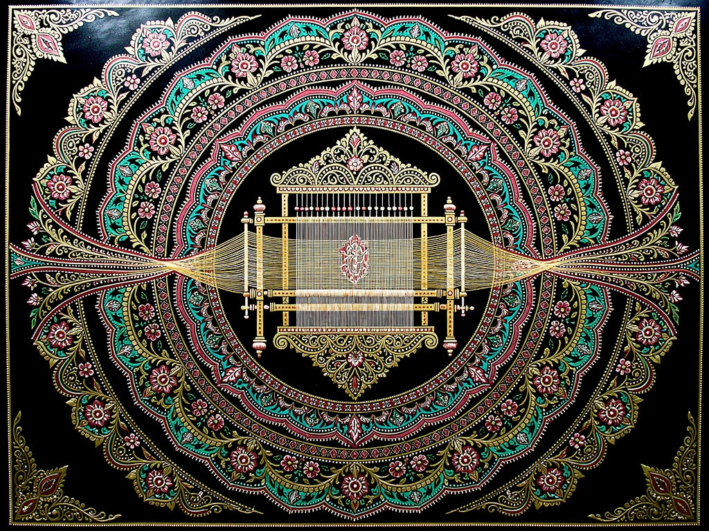
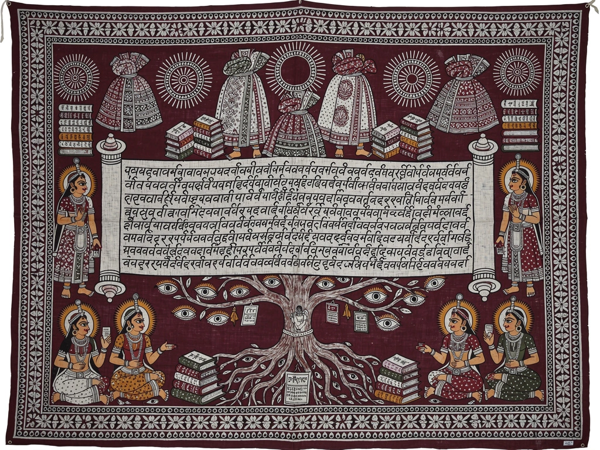
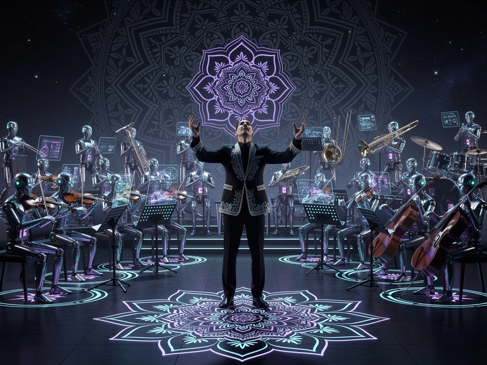
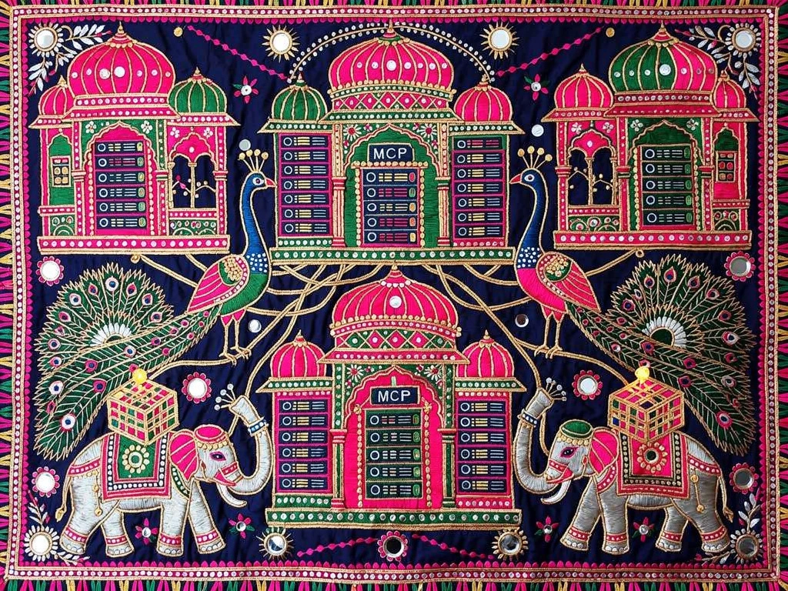
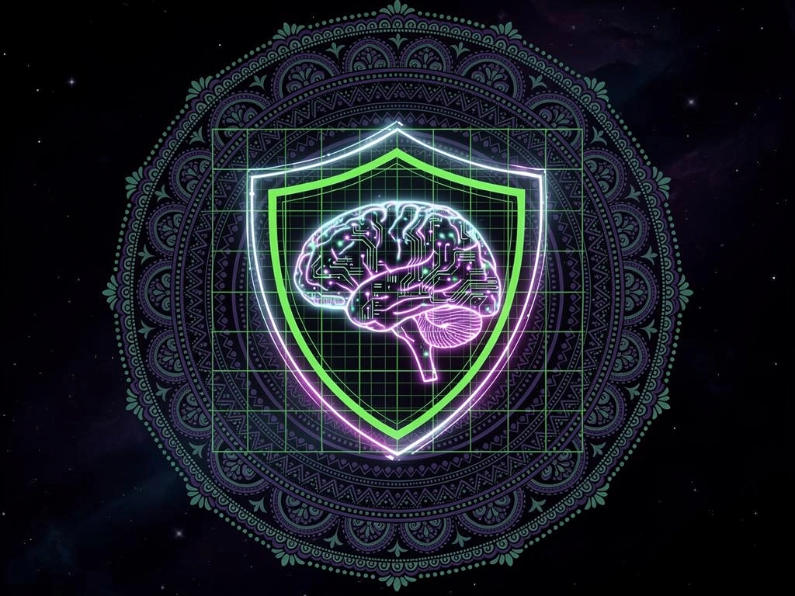

✦ Created Specially For Gujarati Medium ✦
Upskill from operator to AI leader. Nine cutting-edge modules covering agents, swarms, harness engineering, context engineering, and the modern tech stack — illustrated through Gujarati folk art.
Start Learning →This course is built on adult learning principles — because you learn best when learning connects to your experience, solves real problems, and puts you in the driver's seat.
Click any principle to see how the course applies it.
You choose your path. Progressive module structure lets you learn at your own pace, skip what you know, and dive deep into what matters to your role. Checkboxes track your progress — you decide when you're done.
Every concept connects to what you already know. Pharma & Medical Affairs use cases bridge your domain expertise to AI patterns — so you're not learning abstract theory but mapping familiar workflows to new capabilities.
No filler. Every module, exercise, and quiz is directly tied to real AI leadership skills you'll use on Day 1. Industry examples from JPMorgan, Pfizer, Moderna, and others make it immediately applicable.
We don't start with definitions — we start with problems you face. How do you get agents to work reliably? How do you connect AI to your data? Each module poses a real challenge, then introduces the concept that solves it.
This isn't compliance training. You're here because you want to lead. The course respects your ambition — assembling cutting-edge skills that position you as the person who brings AI strategy to the table, not just sits in the room.
Every module ends with hands-on exercises: build an agent, deploy a swarm, design a harness, create an MCP server. You don't just read about AI engineering — you practice it. The quiz and vocabulary lab reinforce through active recall.
Each module pairs cutting-edge AI concepts with hands-on exercises and real Medical Affairs & Pharma industry applications.
Agent loops, tool use, memory persistence, reflection patterns, and self-correction.
Role-based orchestration, emergent behaviors, handoff patterns, and decentralized coordination.

Without harness engineering, agents are unpredictable raw models. With it, they become reliable, auditable, production-ready systems. 27% of agent failures trace to data quality rather than model or harness — proving the harness is what separates a demo from a product.

Context design patterns (progressive disclosure, relevant context windows, compression), anti-patterns (overload, staleness, information asymmetry), and memory hierarchies (working, episodic, semantic, procedural).

The evolution: Vibe Coding (2025) = prompt → code. Agentic Engineering (2026) = architect → orchestrate agents → verify → ship. It's the difference between playing an instrument and conducting a symphony.

Build standardized connectivity layers exposing any data source, API, or tool to AI agents. MCP is becoming the universal integration standard — learn to build and deploy servers.
Design secure, scalable communication fabrics for multi-agent ecosystems. Learn agent discovery, negotiation protocols, and decentralized coordination.
Master the full AI development landscape: foundation models, embeddings, vector DBs, orchestration, harness layers, observability, and deployment pipelines for production-grade AI platforms.

Guardrail design, bias auditing, model validation, human-in-the-loop patterns, regulatory compliance, and responsible AI deployment strategies.
The essential terms reshaping AI in 2026 — defined, compared, and contextualized.
Coined by Andrej Karpathy, 2026. The evolution beyond vibe coding. Vibe coding (2025) meant writing code by describing intent to an AI and accepting whatever it generates. Agentic engineering means orchestrating teams of AI agents — you design the architecture, set the tests, own the reviews, and agents handle implementation. It's the shift from "solo coder with AI autocomplete" to "engineering conductor of an AI orchestra."
Key insight: In vibe coding, you vibe. In agentic engineering, you architect. The human role shifts from writing code to designing systems, setting quality gates, and directing agent teams.
Coined by Mitchell Hashimoto, 2026. The formula: Agent = Model + Harness. The harness is everything that wraps the model — tools, context pipelines, feedback loops, memory, safety hooks, and sub-agent orchestration. If the model is the engine, the harness is the entire car: steering, brakes, dashboard, telemetry, and airbags.
Why it matters: 27% of AI agent failures trace to data quality, not the model or harness — which proves the harness is the differentiator between a demo and a product. Harness engineering is what makes agents reliable, auditable, and production-ready.
Identified by Anthropic, 2026. The most important skill shift in AI. Context engineering replaces prompt engineering as the key discipline. It's not about "writing better prompts" — it's about designing the information environment so the model has exactly what it needs, when it needs it.
Anti-patterns: Context overload (too much info), context staleness (outdated data), information asymmetry (agent sees different info at different stages). Good context engineering eliminates all three.
Created by Anthropic, 2024–2025. An open standard for connecting AI applications to external systems. Just as USB-C provides a standardized way to connect electronic devices, MCP provides a standardized way for AI agents to connect to data sources, tools, and workflows. Now supported by Claude, ChatGPT, VS Code, Cursor, and 100+ integrations.
Why it matters: Organizations now stand up MCP servers instead of building custom integrations. One MCP server can serve any AI client — write once, connect everywhere.
Published by Google, 2025. An open protocol enabling agents from different vendors and frameworks to discover, communicate, and collaborate. A2A defines how agents advertise capabilities, negotiate tasks, and exchange structured messages — making multi-agent ecosystems interoperable the way HTTP made web services interoperable.
Why it matters: Without A2A, agents are siloed. With it, a pharma safety agent, a regulatory agent, and a medical writing agent — each built on different platforms — can seamlessly collaborate on a PSUR.
How AI engineering disciplines evolved — from crafting prompts to engineering entire agent systems.
Every major Claude update from Q1–Q2 2026 that matters for AI leaders.
Anthropic's flagship coding agent evolved from terminal assistant to full development platform. Multi-session, auto-mode, computer use, and 1M-token context (Opus 4.6). Now supports parallel worktrees, subagent-driven development, and test-driven coding workflows.
Terminal → PlatformReal-time collaborative AI where multiple team members work alongside Claude simultaneously. Shared context, parallel task execution, and automatic conflict resolution. Like Google Docs for AI-assisted development and research.
Multi-Player AICloud-based autonomous agent execution engine. Dispatch agents run tasks in the background — code review, testing, documentation, data analysis — without requiring an active session. Results are delivered when complete.
Autonomous Cloud AgentsScheduled, repeatable AI workflows that run on triggers or timers. Think cron jobs but intelligent. Auto-generate daily reports, monitor code health, run regression tests, or send daily digests — all on autopilot.
AI Cron + AutomationThe most capable Opus model yet. 1M-token context window (beta), improved coding accuracy, better long-context reasoning, and sustained performance on agentic tasks. The foundation for all the new features above.
1M Context WindowProgrammable agent behaviors that combine instructions, permissions, and hooks into composable skill packages. Build custom workflows (brainstorming → planning → TDD → review) that automatically trigger at the right moment.
Composable BehaviorsComplete UI overhaul with multi-session support, improved terminal integration, NO_FLICKER rendering, /powerup interactive tutorials, and team onboarding workflows. From pair-programmer to operations platform.
Ops Platform EraBuild real projects. Pharma & Medical Affairs focused.
Create an agent that monitors PubMed for new publications on a specific drug, summarizes findings, and drafts a medical information response letter.
Build a swarm where Signal Detector, Narrative Writer, and QC Reviewer collaborate to produce a Periodic Safety Update Report (PSUR) from raw AE data.
Orchestrate an agent harness that routes content through Medical → Legal → Regulatory review with version control, audit trails, and approval gates.
Implement retrieval-augmented generation over a corpus of 10K+ medical publications, enabling HCP query answering with citation-level evidence.
Build an MCP server exposing Veeva Vault documents, clinical trial data, and safety databases as agent-consumable tools with proper access controls.
Combine all patterns into a production platform: multi-agent orchestration, RAG over med-sci content, MCP integration, A2A communication, and observability dashboard.
Build a harness for the Medical-Legal-Regulatory review process: feedforward guides (approved terminology, template constraints) and feedback sensors (deviation flags, compliance scores) that keep the agent within regulatory bounds.
Design a safety-first agent system with mandatory human review gates, bias detection in signal analysis, audit trail logging, and compliance validation for FDA GxP and EU AI Act requirements.
5 questions on the concepts reshaping AI leadership in 2026.
Key AI terms with Gujarati translations.
Master essential AI terms with interactive flashcards. Flip to reveal definitions, mark what you know, and track your progress.